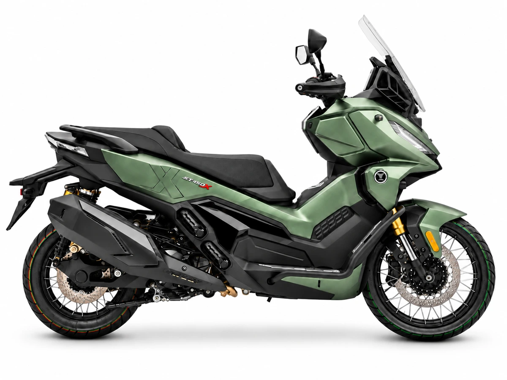

Novedades › Voge SR450X
Novedades · Maxiscooter crossover
Voge SR450X: el crossover bicilíndrico de 42 CV por 6.288 €
Voge ataca el segmento del Honda ADV350 y el Zontes 368G con un argumento que ninguno de los dos puede replicar: dos cilindros. 398 cc, 42 CV aptos para carnet A2, radar de ángulo muerto, suspensiones KYB regulables y llantas de radios, por el precio de una monocilíndrica premium.

La respuesta rápida
El Voge SR450X es un scooter crossover con motor bicilíndrico de 398 cc que rinde 42 CV a 8.000 rpm y 44 Nm a 5.750 rpm, homologado para carnet A2 (una de las pocas opciones A2 con dos cilindros, junto al Zontes 368G ETC). Monta horquilla invertida KYB regulable, monoamortiguador trasero KYB regulable en precarga, frenos radiales de pinza flotante J.Juan con disco de 308 mm, ABS boschero de doble canal con Control de Estabilidad de Curvas y TCS desconectable. Va sobre llantas de radios 17/14 pulgadas (pocas veces vistas en scooters) con neumáticos tubeless, y equipa monitorización de punto muerto con doble cámara y radar trasero, electrovisera, electroasiento, modo Trunk de frenado en solitario, pantalla de 6,75", Keyless y tomas USB-C. Se vende en España desde septiembre de 2026 en cinco colores mate, con PVPR estimado de 6.288 €, 5 años de garantía (tope 75.000 km) y un año de seguro incluido en promoción de lanzamiento.
Cuidado con la prensa que lo describe como monocilíndrico de 449 cc y 34 CV (ha habido algún gazapo): la ficha oficial es de 398 cc, bicilíndrico, 42 CV. El "450" del nombre es comercial.
Motor
| Cilindrada | 398 cc, bicilíndrico en paralelo |
| Potencia | 42 CV a 8.000 rpm |
| Par | 44 Nm a 5.750 rpm |
| Carnet | A2 (35 kW tope legal, sobra margen) |
| Refrigeración | Líquida |
| Transmisión | CVT automática |
| Consumo declarado | 4,3 l/100 km (≈ 418 km de autonomía con 18 litros) |
| Velocidad máxima | n.d. (no declarada; estimada en torno a 160 km/h) |
La diferencia frente a la competencia es la arquitectura, no la cifra: en este segmento (ADV350, X-ADV 350/350ETC, Zontes 368G ETC) domina el monocilíndrico de 330-370 cc. Con 44 Nm a solo 5.750 rpm y dos pistones, la entrega debería ser más llena y menos estresada en autovía, donde un monocilíndrico grande va a mandar revoluciones altas y vibración.
El peso declarado es 198 kg sin gasolina; en orden de marcha la prensa lo sitúa en unos 220 kg (Moto A2 pesó 219 con depósito lleno). Compara siempre con esa salvedad: el ADV350 declara 186 kg, también sin gasolina.
Ciclística, frenos y conducción
- Horquilla invertida KYB de 41 mm, regulable (excepcional en el segmento; el ADV350 no es regulable).
- Monoamortiguador KYB regulable en precarga.
- Llantas de radios 17/14" tubeless (Michelin Anakee Street 110/80-17 y 150/70-14): la fórmula de los crossover de gran cilindrada (X-ADV 17", Forza 750 17"), ahora en un scooter A2.
- Freno delantero de disco de 308 mm con pinza radial flotante J.Juan (doble pistón) y disco trasero de 256 mm con pinza simple.
- ABS boschero de doble canal, 9.1 Mejorado, con Control de Estabilidad de Curvas (CBC) y TCS desconectable.
- Modo Trunk: si se estropea el sensor delantero (típico gazapo en circuito o tras un golpe), permite frenar en solitario con el trasero sin perder el ABS.
- Monitorización de punto muerto (BLIS) con doble cámara delantera y radar trasero: avisa de obstáculos laterales y de la aproximación por detrás a más de 20 km/h relativo, con alerta visual y acústica.
Equipamiento
- Pantalla de 6,75" a color, Keyless, tomas USB-C, electrovisera, electroasiento y bloqueo electroelectro de la guantera.
- Parabrisas ajustable manualmente, asiento a 795 mm, guantera iluminada con toma USB y bloqueo con las llaves Keyless cerca.
- Soporte de móvil de serie (algo que el ADV350 o el Forza 750 cobran aparte).
Dimensiones y peso
| Asiento | 795 mm |
| Peso declarado | 198 kg (sin gasolina; ≈ 220 kg en orden de marcha) |
| Depósito | 18 litros |
| Hueco bajo asiento | Cabe un casco integral |
| Ruedas | 17/14" de radios, tubeless |
| Consumo | 4,3 l/100 km (declarado) |
| Voge SR450X | 6.288 € (estimado) |
| Zontes 368G ETC | 5.592 € (monocilíndrico de 36 CV, radar) |
| Honda ADV350 | 6.790 € (monocilíndrico de 29,4 CV) |
| BMW C 400 X | ≈ 7.960 € (monocilíndrico de 34 CV) |
El PVPR de 6.288 € es estimado y no vinculante: las cifras de lanzamiento y las promos (seguro gratis, financiación) perecen rápido. Verifica con el concesionario antes de decidir.
Ventajas e inconvenientes frente a las monocilíndricas
A favor:
- Entrega más llena y menos vibración en autovía (la queja habitual de los monocilíndricos de 330-370 cc a 120 km/h).
- Más equipamiento de serie por el mismo precio: suspensiones regulables, llantas de radios, radar, electroasiento y electrovisera no existen juntos en ningún monocilíndrico A2.
- Autonomía: 18 litros y 4,3 l/100 km declarados para ≈ 418 km.
- 5 años de garantía (tope 75.000 km), la más larga del segmento.
En contra:
- Peso: 198 kg (sin gasolina) frente a 186 kg del ADV350; se nota en maniobras a baja velocidad y en el aparcamiento.
- Plaza y red de concesionarios de Voge en España, aún en crecimiento frente a Honda o BMW.
- Reventa: un bicilíndrico de marca emergente puede tener una depreciación mayor que un ADV350.
Opiniones de la prensa
- Moto A2 (prueba, 8.8/10): "Voge ha construido el scooter A2 que ningún fabricante europeo o japonés se ha atrevido a hacer": elogia el motor bicilíndrico (suave, vibriendo poco incluso a 120 km/h), las suspensiones KYB regulables y el equipamiento, y critica el peso (219 kg con gasolina) y la falta de hueco para el casco en la guantera.
- TuMoto (probador): "El hueco que Voge ha visto antes que nadie": destaca que por 6.288 € se lleva "el equipamiento de una trail de 12.000 €" (radar, electroasiento, llantas de radios, suspensiones regulables) y la garantía de 5 años; matiza que el asiento a 795 mm es accesible pero la masa se nota en ciudad.
- Motociclismo.es: sitúa al SR450X como "el scooter A2 más equipado del mercado" y remarca que es de los pocos bicilíndricos A2 con carnet A2, junto al Zontes 368G ETC.
Lanzamiento y precio
- Se vende en España desde septiembre de 2026.
- PVPR estimado de 6.288 € (sin PVP oficial consolidado; promos de lanzamiento con un año de seguro incluido).
- 5 años de garantía (tope 75.000 km) + 1 año de seguro incluido en promoción de lanzamiento.
- Colores: gris, verde, azul, negro y blanco, todos mate.
Conclusión
El Voge SR450X es un golpe sobre la mesa en el segmento A2: es el único crossover bicilíndrico A2 con suspensiones regulables, llantas de radios y radar por el precio de una monocilíndrica premium. Los 42 CV y los 44 Nm a media revolución resuelven la asignatura pendiente de los monocilíndricos (la autovía), y el equipamiento (electroasiento, electrovisera, BLIS con radar y cámaras, modo Trunk) es el de una trail de 12.000 €, no el de un scooter de 6.000 €. La contrapartida es el peso (198 kg sin gasolina) y una red de concesionarios aún en crecimiento. Si tu uso principal es carretera y viaje con carnet A2, es probablemente la compra más racional del segmento; si predominan la ciudad y las maniobras, el ADV350 (más ligero, con red Honda) sigue siendo el comodín seguro.